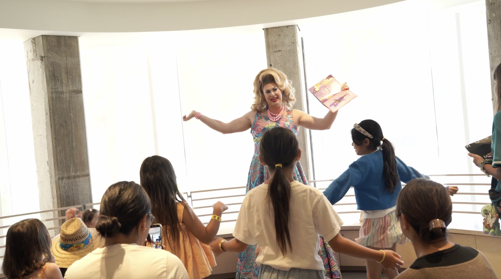
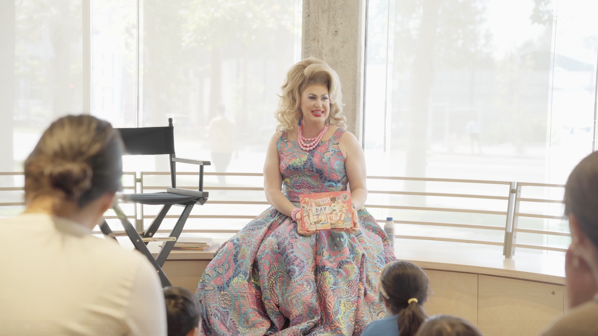
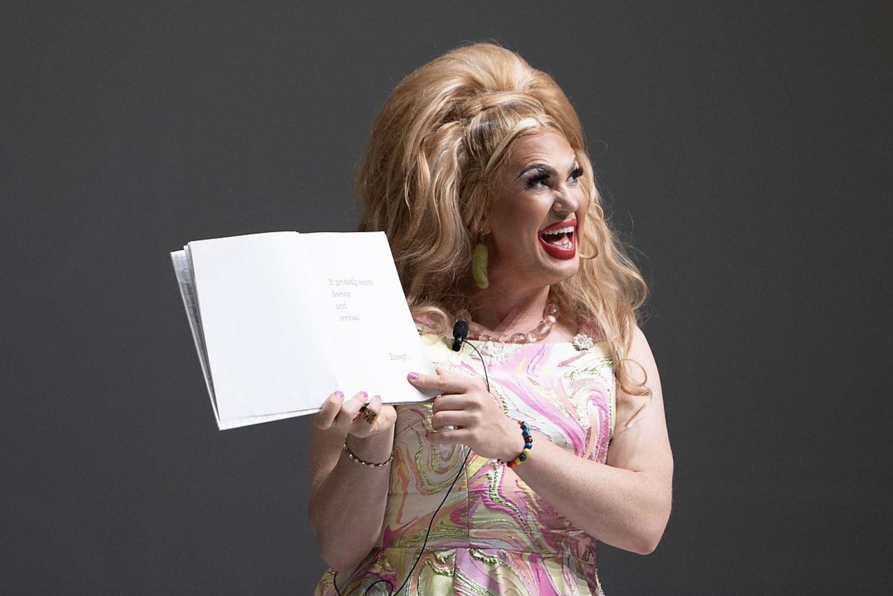
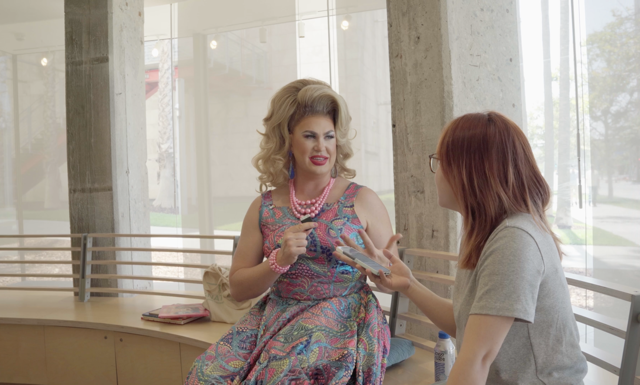

Pickle's Story Time: How West Hollywood's Drag Laureate Brings Education and Drag Together

About a dozen children gathered around Pickle on the floor of the Academy Museum Store in Los Angeles on June 13, 2026. Most sat beside their mothers as she held a copy of Lil Miss Hot Mess’s The Hips on the Drag Queen Go Swish, Swish, Swish.
She began with an altered version of "The Wheels on the Bus." "The shoulders on the drag queen go shimmy, shimmy, shimmy," Pickle sang, shrugging her shoulders. Several children stood and copied her, shouting the final "shimmy" back at her.
Two days later, on June 15, 2026, the West Hollywood City Council honored Pickle and passed the crown to her successor, Odious Ari, the city's first drag king. City officials said Pickle had not only represented drag in West Hollywood, but had defined the role during her three years in it. The June 13 session was among the last she led as the city's inaugural Drag Laureate.
Who Is Pickle, and What Is Drag Story Hour
Pickle, whose legal name is Joseph Marcellus Faragher, is a drag queen and the Los Angeles organizer of Drag Story Hour. She uses she/her pronouns and is also a middle school teacher, though she asked that the school's name not be published to protect student privacy. She leads Drag Story Hour in different public spaces across Los Angeles nearly every week.
Drag Story Hour was founded in San Francisco in 2015 by writer Michelle Tea and RADAR Productions, with organizers Julián Delgado Lopera and Virgie Tovar playing leading roles in its early development. The program uses drag as a storytelling medium to introduce audiences to LGBTQ communities and to encourage self-acceptance and understanding of gender expression and identity through LGBTQIA+ stories.

Pickle began doing drag as a student at Hamilton High, when she appeared in a school production of A Funny Thing Happened on the Way to the Forum and played a character who gets into drag. In an interview with LAist, she described the moment she put on the wig, lipstick and dress: "Something was kind of awakened where I was like, 'Oh, this works.'" She continued exploring drag while at Sarah Lawrence College in New York.
How Pickle Builds a Story Hour
Pickle said the sessions are aimed mostly at young children and teenagers, but everyone is welcome. When selecting books, she looks for work by LGBTQ creators or stories that introduce LGBTQ experiences in an accessible way.
One example is The Hips on the Drag Queen Go Swish, Swish, Swish by Lil Miss Hot Mess, a drag queen, author, storyteller and board member of Drag Story Hour. Another is Feminist Baby by Loryn Brantz, which introduces ideas of equality and autonomy in a playful way. She also uses books like This Day in June by Gayle E. Pitman, which depicts a Pride Parade.
After the reading, Pickle builds in movement and interaction. She leads songs, dances and small games that connect back to the book, so children can respond physically to what they just heard.
In an earlier Beverly Press interview, Pickle described the difficulty of explaining her role. "I just never came up with a good enough answer," she said. "I get to work with children, and sometimes I feel very silly, because it's like, 'Well, what is this? I'm the only one, really.' But I always tell my friends and people ... In 60 years, I'll be so proud to have been this person."
The Drag Laureate Role
A laureate is typically someone honored for achievement in the arts or sciences. Pickle is the inaugural Drag Laureate of the City of West Hollywood, a paid civic role created in 2023. She was selected in June 2023 through an application process run by the city's Arts and Cultural Affairs Commission. Her original term was set to run from July 1, 2023, to July 1, 2025, but the city extended it for a third year, through July 1, 2026. The city provides a $12,500 annual award and a $2,500 annual stipend for city drag events, totaling $15,000 per year.
“Pickle was selected as the drag laureate to serve a two-year term, but we couldn't let Pickle go, so we extended it to three,” Mayor John Heilman said.
The position's duties include raising the presence and appreciation of drag culture and art in West Hollywood, fostering partnerships with local businesses and community organizations, celebrating the city's spirit, and inspiring emerging drag artists through drag history. West Hollywood Councilmember Lauren Meister, who helped draft the original Drag Laureate proposal, told the Los Angeles Times: "The LGBTQ community has such a history with the city. We wanted the drag laureate to be an ambassador to West Hollywood businesses but also promote art and culture. We wanted to do something that could bring some levity back to our city and keep things edgy."
During her term, Pickle appeared at WeHo Pride, the West Hollywood Halloween Carnaval and National Night Out. She created quarterly drag roundtables at Plummer Park Community Center to connect drag performers of all backgrounds with resources, organized free sewing workshops and drag story hours, participated in Harvey Milk Day events, hosted a drag pageant honoring the late LGBTQ rights activist José Julio Sarria, and hosted a celebration of West Hollywood's 39th anniversary.
On Pride Parade day itself, June 14, 2026, Pickle appeared as a guest performer at Pride Night at the Aquarium of the Pacific in Long Beach, an event organized with the LGBTQ Center Long Beach.

Not Always Welcomed
Drag Story Hour has not always been welcomed. On October 25, 2023, Pickle arrived at the San Fernando Public Library for a scheduled Drag Story Hour and found the entrance blocked by protesters and barricades. She told ABC7 that she hoped someone would be held accountable and that people would understand the importance of Drag Story Hour.
“It is about self-expression,” said Pickle. “These programs are completely G-rated, and if they don't want to bring their children for whatever reason, that is their right. It is not their right to determine whether or not public programs are offered through a public library.”

At the Academy Museum of Motion Pictures, a little girl looked up at Pickle, tall and glamorous, and turned to her mother sitting behind her.
"Is she a queen?" she whispered.
Pickle heard this and bent down.
"Yes," she said. "My dear little princess!"